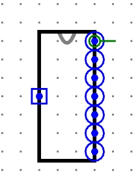

写在前面
从上周六开始看指导书到今天ac，p4的课下整整做了一周。正好最近没啥事（虽然还没强测CPU。。。），写这篇文章记录一下搭建的过程，顺便也给下一届的学弟学妹们留一点儿参考。
话说，软院第一年开机组，p1~p3还能看6系学长的博客，p4往后就只能自求多福了。不过同一届的大佬也写了博客，我也从中受益良多。主要是这两篇
BUAA(2021秋)计算机硬件基础（软件学院计组）P4--用Logisim实现流水线CPU(含测试数据供自测)
在此隔空感谢一波~~~
题目
实验要求
使用logism自主搭建出一个支持所给指令集的32位五级流水线CPU，并通过课下正确性测试。
课上会通过新增指令的方式，来考核课下设计的CPU。
提供的所有模块请在课件下载中获得。
- 指令集：lw,sw,addu,subu,lui,ori,jal,j,beq,nop。nop是空指令（0x00000000），不进行有效行为（修改内存、寄存器等）。
- 内存大小：32字。
- ROM大小：要求能执行1024条指令。ROM不一定需要地址的全部位数。
- PC需要复位功能，起始地址为0x00003000。
提交要求
顶层模块命名为main
顶层模块样式及端口请严格按照以下提交：

左侧端口是输入端口：Reset信号，可以对PC、GRF、DM、流水线寄存器复位。
右一端口是Instr：32位指令码。
右二端口是RegWrite：1位寄存器堆写入信号。
右三端口是RegAddr：5位寄存器编号。
右四端口是RegData：32位写入寄存器数据。
右五端口是MemWrite：1位DM写入信号。
右六端口是MemAddr：5位写入地址。
右七端口是MemData：32位写入DM数据。
上述所有信号均取自于W段的信号。
建议main内部端口的相对位置如下排列：

预备知识
因为p3就是用logisim搭建单周期CPU，所以这里假设已经有了对单周期CPU的基础知识。
多周期
按照华科的计组，对CPU的学习顺序应该是单周期->多周期->流水线，但是北航直接跳过了多周期（课上讲了但是实验没有涉及），所以这里简单做一些介绍，为了更好地理解流水线CPU
我们清楚，单周期CPU时钟周期即为所有指令中消耗的最长时间，但这在使得设计简单的同时，造成了很多浪费。例如：对于SW和J两种指令来说，它们所需的时间有显著差异，但是由于SW的存在，J指令在单周期CPu内消耗的时间和SW是一样的。
因此，我们自然而然地设想，能否让每一条指令所需的时间和执行的时间恰好相等，让CPU得到充分的利用。但很遗憾，这样会让设计超级复杂。那么我们退而求其次，将每条指令执行的过程按照某种约定，分为几个阶段，让单个阶段最长时间作为时钟周期，这样就能有效利用CPU了，而这种设计，就被称为多周期CPU——一条指令的执行要经过多个周期。
举个例子，我们把一条指令的执行分为5各阶段——取指令、“翻译”指令、运算、操作内存、操作寄存器堆。那么对于SW指令，需要5个时钟周期，因为它5个阶段都要涉及，但是对于J指令，只需要2个时钟周期——取指令、”翻译“指令。
流水线
对于多周期CPU，还是存在一定的资源浪费，一条指令的一定要等上一条指令结束后才能进行.我们设想，能否按照使用的硬件划分指令执行阶段，一条指令进行完一个阶段后，下一条指令就进入这个阶段。形象地比喻，就像合一食堂二楼的自选窗口（）
我们在这里将其分为五个阶段：
- 取指（Fetch Instruction)：从IM（Instruction Memory）中读出指令；
- 译码（Decode）：根据指令生成控制信号，扩展立即数，比较
- 运算（Execute）：ALU执行运算操作
- 访存（Memory）：读写DM（Data Memory）
- 写回（Write Back）：写寄存器
但是，这也带来了许多问题（以下部分复制粘贴自指导书）：
- 硬件冲突
硬件冲突是说同一时刻需要对同一互斥访问硬件（同一时刻只允许一次读或写）进行访问，举例来说，译码段需要从存储器中取出指令，访存段需要对存储器写入数据，这两个操作同时进行就会带来冲突。在我们的设计中，IM和DM是独立的两个存储器，因此不必考虑。
- 控制冲突
控制冲突是分支指令和跳转指令带来的冲突。分支指令的分支信号在下一周期到来前未能及时计算出，导致下一条指令的地址不能及时决定；跳转指令的跳转地址计算也有类似的问题。
我们采取延迟槽的办法。
- 数据冲突
数据冲突是关于数据“新鲜性”的冲突。指令的执行离不开寄存器，有的指令会利用寄存器数据，有的指令会写回寄存器，有的指令两者皆有，当前序执行的指令的操作寄存器和后序执行的指令的操作寄存器有重叠时，就存在数据关联。当前序指令的关联数据还未写入目的寄存器，后序指令就要用到该关联数据时，就会产生错误（冲突）。
当然，数据冲突不仅包括从Memory读取写入的数据，还包括一系列控制信号等。
对于后者，我们采取在两个阶段间添加寄存器的办法保留数据，对于前者，我们采取暂停和转发（这些概念会在后面进一步介绍）的办法。
理想流水线CPU的搭建
刚开始一个很自然的想法就是先搭一个理想CPU，然后再处理冲突的情况。所谓理想CPU，就是不考虑冲突的情况，将单周期CPU扩展为流水线CPU。这一部分讲道理没什么难度，又提供了四个寄存器模块，要做的就是把单周期CPU的硬件按照阶段复制到相应位置，并且连上寄存器。
大致样子是这样：
理想流水线CPU
其中有几个当时很困惑的点：
- 为什么指令输出instr和内存相关MemWrite,MemData,MemAddr要取W段，而不是F段和M段？
因为要求就是这样的 QAQ，评测机就是按这个测的（当然我认为这个不是很合理）
- NPC模块的输入段PC为什么要接F阶段的而不是D阶段？
这是一个当时令我头痛了很久的问题，对于顺序指令，接F阶段是一件十分自然的事情：取完指令，PC+4。但是对于跳转指令，就需要仔细一些，其中还涉及到了延迟槽的问题，所以这个问题放到后面说。大家也可以自己想一想，三个跳转指令都要用到原来PC（beq是相对跳转自然要用到，j、jal要用到PC的高四位），那这个PC到底是哪段的，大家可以参考一下MIPS手册（英文版），这个中文版的恰恰缺少这一块的说明。
还有几个不是问题的说明：
- lui的扩展被我放到了D段的EXTEND模块中，然后为lui增加了一个aluop

注意：每个人的单周期CPU都是由差别的，尤其是控制信号的约定，所以建议大家还是仅仅以指导书、学姐学长的架构为参考，按照自己的单周期CP和当时的文档来搭建。当然你看着别人的顶层架构，逆向分析每一个信号的作用也是可以办到的，但是不太推荐。
至此，理想流水线CPU就搭好了，大家可以按照P3时候的指令测一测，当然每条指令间要加几个nop，防止发生冲突。
暂停和转发
这两个模块算得上是流水线CPU的核心模块了，但是课程组已经实现好了（）
理论知识
- 几个定义（复制粘贴自指导书）
对任意一条通用指令（自创定义：只涉及通用寄存器的指令），有源头寄存器和目的寄存器：当一条通用指令i需要寄存器s1、寄存器s2的数据时，s1和s2就是i的源头寄存器（不需要用到其数据时，s1和s2为0）；当一条通用指令i需要写入寄存器des时，des就是i的目的寄存器（不需要写寄存器时，des为0）。
对于指令的源寄存器s有时间tuse_D（/E/M），意思是在从*D（/E/M）*段开始，过几个时钟周期需要使用s里的数据。对于指令的目的寄存器des有数据tnew_D(/E/M)*，**意思是从D（/E/M）*段开始，过几个时钟周期将要写入des的数据产生。
具体的例子大家可以查看AT表格，上面写的很清晰了
- 暂停
感觉指导书上写的蛮清晰的，这里用自己的理解再描述一下：
暂停的原因就是要用的数据还没准备好，不暂停的话取得的数据就是错误的，因此暂停的条件也清晰了：每条指令i在译码段时（DEC模块运行指令i），要和它前面运行的指令j（前面模块运行的指令j，一般是前面的所有模块）对照判断，看是否需要暂停：当i的源寄存器和j的目的寄存器相同时（设为寄存器k），i和j存在数据关联，这时如果i的tuse小于j的tnew，代表k中数据还没被j准备好（甚至不能转发过来），这时需要暂停D段指令i，否则i会使用k中旧数据里错误运行。
暂停的方法：顾名思义，暂停就是让CPU中的当前指令及之后全部“冻结”，之前的指令继续进行直到数据准备好：**i的tuse不小于j的tnew，**而冻结就是不取指令（IF/DEC流水线寄存器和PC锁定）和不执行指令（将DEC/EXE流水线寄存器同步复位（插入气泡，使当前指令无法向下传递））
- 转发
理论上讲，有了暂停，我们的数据冲突问题就算解决了，但是，从数据准备好到数据写入内存/寄存器可以被读取，这段时间是空闲的，这样转发也就随之出现。所谓转发，就是当数据准备好后，就将其传给后续指令的数据源头des，而数据源头又是是转发而来的数据，有时是正常读取的数据，这就需要多选器和相应的控制信号了
特别的，对于W到D的转发（也就是写入的寄存器和读取的寄存器相同时），我们仍然可以与上述转发实现逻辑一致（即外部转发），但我们还可以选择内部转发，对于寄存器：
if(WR && A1 == A3) RD1 = WD
if(WR && A2 == A3) RD2 = WD当然还有一个更简单的办法：将寄存器堆改为先写后读（下降沿触发），就不存在数据冲突了。
具体实现
我采用的是分布式译码的办法（另一个我不知道是啥，也不会 QAQ），就是对每一个阶段（除了F段）进行译码，得到s1,s2,des,tuse1,tuse2,t_new信号。然后再将它们和暂停模块、转发模块相连即可。
在这里以D和E阶段为例，事实上就是根据AT表用多选器搞定
D
E
几点说明：
- 可以看到，在每个模块内，都有Controller的一部分：根据op和func得到相应指令的信号，当然我这里做的很不好，当时犯懒了没有为它们单独写一个模块，直接复制的，这样课上添加指令的时候，每个模块都要改，很麻烦。我会修改的 QAQ
- 在D段没有t_new信号，而是在E段才生成，因为tuse不会和D阶段的tnew比较，当然在D段生成也没有问题
- AT表格为x的直接置为0即可
一些经验
写到这儿也就差不多了，还有一些当时debug的心得。
- 关于跳转指令的PC
没错就是没讲完的那一点，通过看英文的MIPS指令集我们可以看出


对于beq，它使用的PC值是beq指令对应的PC值，而对于j和jal，它们使用的PC值本来就是延迟槽指令对应的PC。而我们的NPC模块输入的PC值，是延迟槽指令的PC，因此如何计算NPC就教给大家自己完成了。
- 实现内部转发的时候要记得WR信号，我因为这一个点从中午十二点半debug到晚上十二点半
- 实现完转发模块后，转发的内容要在理想流水线CPU中全部替换
- 不同阶段寄存器连接的Tunnel要合理命名，例如我是在最后面加上编号，当然加上阶段是更好的选择（）
- 关于自测的问题可以参考上面CSDN上大佬发的那篇文章，还涉及了logging测试，给的测试指令也很好，当然没测试出来我上面那个de了十二个小时的bug QAQ
大概就这些了吧，如果还有新的想法我还会更新的，大家有问题可以直接评论区问或者私信我，重度知乎使用者一定不会错过消息的。
祝大家，也祝我一切顺利。
哦对，补一张顶层架构给大家参考。